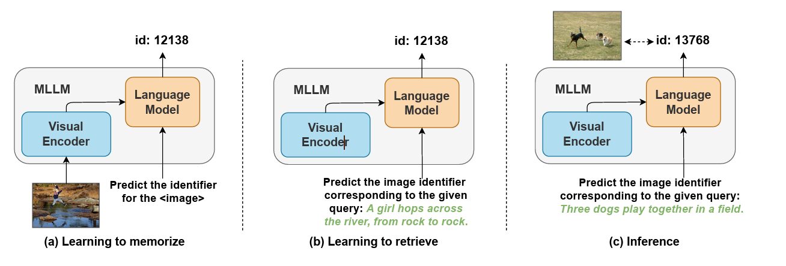

GENIUS：面向通用多模态搜索的生成式检索框架¶
论文：GENIUS: A Generative Framework for Universal Multimodal Search (CVPR 2025) 论文链接：https://arxiv.org/abs/2503.19868 代码链接：https://github.com/sung-yeon-kim/GENIUS-CVPR25 作者：Sungyeon Kim, Xinliang Zhu, Xiaofan Lin, Muhammet Bastan, Douglas Gray, Suha Kwak
⚡ 关键数字（论文原文）¶
| 项目 | 关键数字 | 出处 |
|---|---|---|
| 数据集 | M-BEIR（UniIR 提出，HuggingFace: TIGER-Lab/M-BEIR），由 10 个数据集组成（MS-COCO、Fashion200K、FashionIQ、VisualNews、NIGHTS、OVEN、EDIS、CIRR、InfoSeek、WebQA），覆盖 4 个领域、8 类检索任务；训练 query 1.1M、验证 182K、测试 190K，候选库 5.6M 条；universal 检索即在全量 5.6M 候选池上评测 |
5.1 节 + Table 6 |
| 硬件 | 训练 4×RTX 3090，推理速度均在单张 RTX 3090 上测得——全程消费级显卡 | 附录 B.2 / Fig. 4 图注 |
| 推理速度 | 文搜图 beam=30 时 19.6 QPS（≈51 ms/query），beam=50 时 11.9 QPS——beam 越大召回越好但延迟上升 | 附录 p14 |
| 对比 GRACE | GENIUS（T5-small + CLIP encoder）吞吐约为 GRACE（Flamingo-3B）的 4 倍；候选库 0→300K，生成式方法速度几乎不变，CLIP 向量检索明显下降 | Fig. 4 |
| 存储 | 每条候选仅 98 bits（2-bit 模态码 + 8×12-bit 语义码）≈ 0.012 KB，比 CLIP 768 维 float 向量（≈3 KB）节省 99%+ | Table 7 |
| 训练效率 | 1.1M 样本、4×RTX3090 下量化器仅 0.4h + 生成器 2h（CLIP encoder 本身 91h）；按单样本算比 GRACE 高约 2.8 倍 | 附录 B.2 |
| 三阶段耗时 | CLIP-SF encoder 91h / 残差量化器 0.4h / T5 生成器 2h——CLIP-SF 直接复用 UniIR 预训练权重并冻结，GENIUS 真正的训练增量只有 Stage 1+2 约 2.4h；论文未单独给出 Stage 0 特征提取耗时 | 附录 B.2 |
| 精度 | Flickr30K 零样本 R@5 74.1%（超 GRACE 15+ 个百分点）；COCO R@5 65.5% vs GRACE 39.2%、IRGen 50.7% | 附录 D.1 |
🛒 电商（时尚）相关子数据集（附录 Table 6 / Table 1）¶
| 数据集 · 任务 | 训练 query | 验证 / 测试 | 候选库 | 精度（GENIUS+重排 vs CLIP-SF） |
|---|---|---|---|---|
| Fashion200K 文搜图（\(q_t \to c_i\)） | 15K | 1.7K / 1.7K | 201K | R@10 16.2 vs 18.0 |
| Fashion200K 图搜文（\(q_i \to c_t\)） | 15K | 4.8K / 4.8K | 61K | R@10 16.3 vs 18.3 |
| FashionIQ 图文改款搜索（\((q_i,q_t) \to c_i\)） | 16K | 2K / 6K | 74K | R@10 19.3 vs 24.4 |
| 合计 | ≈46K | — | ≈336K | — |
- 时尚子集仅占全量 M-BEIR 约 4% 训练量、6% 候选库；FashionIQ 的"商品图 + 修改指令 → 目标商品图"即电商典型的改款搜索形态
- 注意：时尚子集上生成式方法精度仍低于嵌入式基线（CLIP-SF），且 GRACE/IRGen 未在时尚数据集上报告数字（只测了 COCO）——"领先 GRACE 28.6pt"的结论只在 COCO 文搜图上成立
1. 项目概述¶
GENIUS 是一个通用生成式多模态检索框架，用单一模型支持多种跨模态检索任务，包括图文搜图、图文搜文、文搜图、图搜文、图文搜图文等。与传统基于嵌入向量+最近邻检索的方法不同，GENIUS 将多模态内容编码为离散的分层 ID，通过生成式检索实现常数时间查找，检索速度不随候选库规模增长而变慢。
核心优势¶
- 通用检索：单一模型处理图搜图、文搜文、图搜文、文搜图及组合查询
- 快速检索：基于离散 ID 匹配的常数时间查找，与候选库大小无关
- 有竞争力的精度：在多个任务上与嵌入方法相当甚至更优，同时大幅降低推理成本
2. 方法架构¶
GENIUS 由三个核心组件构成，采用三阶段训练流程：
2.1 多模态编码器（CLIP-SF）¶
使用 UniIR 的分数融合（Score Fusion）CLIP 模型作为多模态编码器，将图像和文本特征编码到共享的嵌入空间。该模型已在 M-BEIR 数据集上预训练，无需额外预训练步骤。
CLIP-SF 与原版 CLIP 的架构对比¶
CLIP-SF 的骨干架构与原版 CLIP 完全一致（ViT 图像塔 + Transformer 文本塔的双塔结构），区别在于融合策略和训练数据：
| 原版 CLIP | CLIP-SF（GENIUS 使用） | CLIP-FF | |
|---|---|---|---|
| 骨干架构 | ViT + Transformer 双塔 | 同原版 CLIP | 同 CLIP + 额外 T5 交叉注意力层 |
| 融合方式 | 仅在损失函数层算相似度 | 图像向量 + 文本向量直接相加 | token 级拼接 → T5 交叉注意力 → 均值池化 |
| 交互深度 | 无交互（独立编码） | 浅交互（向量加法） | 深交互（token 级注意力） |
| 训练数据 | 4 亿图文对 | M-BEIR 多模态检索集 | M-BEIR 多模态检索集 |
三种融合方式的代码实现对比：
# CLIP-SF：向量直接相加（clip_sf.py:49）
def fuse_embeddings(self, img_emb, txt_emb):
return img_emb + txt_emb
# CLIP-FF：token 级拼接 + T5 交叉注意力（clip_ff.py:178）
combined = torch.cat([txt_feat, img_feat], dim=1) # [bs, 127, 512]
output = self.t5_layers(inputs_embeds=combined)
multimodal_emb = mean_pooling(output)
GENIUS 选择 CLIP-SF 的原因：架构简单高效，且 UniIR 实验表明 Score Fusion 在多模态检索任务上效果优于 Feature Fusion。在 GENIUS 中 CLIP-SF 参数完全冻结，仅作为特征提取器使用。
CLIP-SF 训练流程¶
CLIP-SF 不是从头训练，而是在预训练 CLIP 基础上微调：
起点：OpenAI 预训练好的 CLIP（4 亿图文对，对比学习），图像塔和文本塔的输出已在同一向量空间。
微调：在 M-BEIR 上用对比学习继续训练。每条数据是一个 query-target 对，例如：
query: 一张红色运动鞋图片 + "找蓝色款"
target: 一张蓝色运动鞋图片
每一步的训练过程：
Step 1 编码：
query 的图片 → 图像塔 → q_img
query 的文本 → 文本塔 → q_txt
target 的图片 → 图像塔 → p_img
target 无文本 → p_txt = 0（mask 置零）
Step 2 相加融合：
q = q_img + q_txt （query 融合向量）
p = p_img + p_txt （target 融合向量，此处 p = p_img）
Step 3 算相似度矩阵：
score[i][j] = cos(q_i, p_j) 一个 batch 内所有 query 和 target 两两计算
Step 4 对比损失：
对角线 score[i][i] 是正例，其余是负例（in-batch negatives）
交叉熵损失让正例相似度最大、负例相似度最小
反向传播更新图像塔和文本塔的参数
训完后：导出为 clip_sf_large.pth，GENIUS 直接加载并冻结参数，仅做特征提取。
为什么需要微调：原版 CLIP 训练的是"图片-描述"配对，而 M-BEIR 的场景是"用图/文/图文混合去检索"，微调让模型适应检索任务，比如学会理解"找蓝色款"这类指令性文本。
2.2 残差量化器（RQ）¶
RQ = Residual Quantization（残差量化），作用是将 CLIP-SF 输出的 768 维连续 embedding 映射为离散 ID 序列，使后续的 T5 可以像生成文本一样"说出"文档编号。
核心概念：码本与码字¶
码本（Codebook）= 一本词典，包含固定数量的向量
码字（Codeword）= 词典里的一个词条，是一个具体的向量
码本（例如 4096 个码字）：
┌─────────────────────────────────────┐
│ 编号 0: [0.12, -0.34, 0.56, ...] │ ← 一个码字
│ 编号 1: [0.78, 0.22, -0.11, ...] │
│ ... │
│ 编号 4095: [0.05, -0.89, 0.12, ...] │
└─────────────────────────────────────┘
量化 = 查词典：输入向量 → 找码本里最近的码字 → 输出该码字的编号（ID）
码本不是手动设计的，而是训练出来的：用 k-means 对训练数据聚类得到初始码字，训练过程中用 EMA（指数移动平均）持续更新——被频繁分配的码字会向输入均值方向移动，长期不用的"死码字"会被重新激活。
两大子模块¶
Combiner（图文特征融合）：CLIP-SF 在特征提取时存的是分开的 img 和 txt 向量（没有预先相加），Combiner 在 Stage 1 训练时将它们融合。来自 CLIP4Cir，本质是 4 个 MLP + 一个动态门控机制（residual_quantization.py:117）。
架构如下：
image_features [bs, 768] text_features [bs, 768]
│ │
│ × img_mask │ × txt_mask
▼ ▼
┌──────────────┐ ┌──────────────┐
│ Linear 768→2560│ │ Linear 768→2560│
│ ReLU │ │ ReLU │
│ Dropout │ │ Dropout │
└──────┬───────┘ └──────┬───────┘
│ │
img_proj [bs, 2560] txt_proj [bs, 2560]
│ │
└────────────┐ ┌────────────────┘
▼ ▼
cat(txt_proj, img_proj)
│
raw_combined [bs, 5120]
│
┌────────┴────────┐
▼ ▼
┌──────────────┐ ┌──────────────┐
│ Linear 5120→5120│ │ Linear 5120→5120│
│ ReLU │ │ ReLU │
│ Dropout │ │ Dropout │
└──────┬───────┘ │ Linear 5120→1 │
│ │ Sigmoid │
combined [bs,5120] └──────┬───────┘
│ │
▼ w [bs, 1] (0~1)
┌──────────────┐ │
│ Linear 5120→768│ │
└──────┬───────┘ │
│ │
combined_out [bs,768] │
│ │
▼ ▼
┌─────────────────────────────────────────┐
│ combined_out │
│ + w × text_features (原始文本) │
│ + (1-w) × image_features (原始图像) │
└────────────────┬────────────────────────┘
▼
output [bs, 768]
本质就是 4 个 MLP：
MLP 1: Linear(768→2560) + ReLU # 投影图像
MLP 2: Linear(768→2560) + ReLU # 投影文本
MLP 3: Linear(5120→5120) + ReLU → Linear(5120→768) # 融合
MLP 4: Linear(5120→5120) + ReLU → Linear(5120→1) + Sigmoid # 门控权重 w
最终: output = MLP3(拼接) + w × txt + (1-w) × img
动态权重 w 的作用：w 是一个自动调节的旋钮，根据当前输入内容决定"更信图还是更信文"：
w = 0.85 → 85% 信文本 + 15% 信图像（文本信息量更大时）
w = 0.2 → 20% 信文本 + 80% 信图像（图像信息量更大时）
w = 0.5 → 各一半
w 是通过 MLP 4 从当前的图文内容中算出来的，每个样本的 w 值都不同。例如查询是"一张鞋图 + 换个蓝色"时，文本指令信息量更大，w 会偏向文本。当输入是纯图（txt_mask=0）或纯文（img_mask=0）时，mask 会将缺失模态置零，w 值自动失效。
与 CLIP-SF 简单相加的对比：CLIP-SF 的 fuse_embeddings 是等权重 1:1 直接相加（img + txt），没有可学习的权重调节；Combiner 用 w 实现自适应权重 + MLP3 提供非线性交叉特征，融合效果更好。CLIP-SF 的参数是冻结的，而 Combiner 随 RQ 一起训练。
残差向量量化：分两部分——第一层 VectorQuantize（码本大小=3，模态指示）和后续层 ResidualVQ（码本大小=4096，语义编码）。
残差量化的工作原理¶
每一层量化上一层留下的残差（未编码的部分），逐层逼近原始向量：
输入向量 v = [0.8, 0.3, -0.2, ...]（768 维）
第 1 层（码本 A，3 个码字）：
找最近码字 → 码字 0 = [0.75, 0.28, -0.18, ...]
输出：ID_1 = 0（图像）
残差：r1 = v - 码字0 = [0.05, 0.02, -0.02, ...] ← 很小
第 2 层（码本 B，4096 个码字）：
在码本 B 里找离 r1 最近的码字
输出：ID_2 = 1234
残差：r2 = r1 - 码字1234 = [0.01, 0.01, -0.01, ...] ← 更小
第 3 层（码本 C，4096 个码字）：
在码本 C 里找离 r2 最近的码字
输出：ID_3 = 567
残差：r3 ≈ [0.001, ...] ← 几乎为零
...以此类推，每层有独立的码本
实际配置：9 层¶
从配置文件 inbatch.yaml 中：codebook_level: 8，加上 modality_index=True 会在代码中 +1，实际是 9 层：
| 层 | 码本大小 | 作用 | 输出示例 |
|---|---|---|---|
| 第 1 层 | 3 | 模态指示（0=图/1=文/2=图文） | <a0> |
| 第 2~9 层 | 各 4096 | 语义编码（从粗到细） | <b1234><c567>...<i1500> |
完整 ID 示例：一张红鞋图片 → <a0><b1234><c567><d890><e2345><f100><g3000><h2000><i1500>
层数在哪发挥作用¶
- 决定 ID 长度：9 层 = 每个文档用 9 个 token 表示，层数越多信息越精确但 T5 生成更难
- 决定重建精度：层数越多，残差越小，量化后的向量越接近原始向量
- 决定 T5 生成序列长度：T5 需要生成恰好 9 个 token 来描述一个文档
第一层模态指示的设计意义¶
# residual_quantization.py:235
self.vq = VectorQuantize(codebook_size=3, ...) # 第 1 层，只有 3 个码字
self.residual_rq = ResidualVQ(codebook_size=4096) # 第 2~9 层，4096 个码字
self.residual_rq.layers[0] = self.vq # 替换第 1 层
强制第一层只能输出 0、1、2 三个 ID，让 T5 生成时第一个 token 就确定模态，后续 token 只需在该模态下编码语义，减少搜索空间。
训练过程¶
def compute_single_batch(self, batch):
# 1. Combiner 融合图文特征
encode_feature = self.encoder(all_img_emb, all_txt_emb, img_mask, txt_mask)
# 2. 残差量化：得到量化向量、离散 ID、量化误差
quant, Is, rq_loss = self.residual_rq(encode_feature)
# 3. 三个损失联合优化
loss = cl_loss + rq_loss + mse_loss
- 对比损失（l_cl）：作用于 Combiner 的输出 q_emb 和 p_emb（不是 CLIP-SF 的原始向量）。拉近 query 和 target 的融合向量，推远 batch 内其他负例。保证融合后的特征空间中检索关系正确。
- 量化损失（l_rq）：作用于量化前后。让量化后的向量尽量还原原始融合向量，减少信息损失。是残差量化本身的训练信号。
- MSE 损失（l_mse）：作用于量化后的向量 q_decode 和 p_decode。计算
MSE(q_decode, p_decode)，直接约束 query 和 target 量化后也要接近。
为什么需要 l_mse：l_cl 保证原始向量层面 query ≈ target，l_rq 保证量化前后信息损失小，但两者合起来不保证量化后的 query 和 target 仍然接近。l_mse 补上这个缺口，确保离散 ID 层面也能保持检索关系。类比：两个人（query 和 target）本来长得很像（l_cl），各自化妆后（量化）也不应该变得不像（l_mse）。
码本通过 EMA 更新（decay=0.9），不走梯度反传。
碰撞问题¶
多个不同文档可能被量化成相同的 ID 序列（碰撞），代码中用 collision_update 跟踪碰撞数量。碰撞越少，ID 的区分度越高，检索越准确。
2.3 T5 生成器（ID Generator）¶
T5 生成器的作用：输入查询向量（768 维），输出目标文档的 9 个 ID token。训练时学会"查询 → 目标 ID"的映射，推理时只给查询，生成 ID 后去候选库查出文档。
模型组成¶
整个组件里有冻结和可训练两类部分：
冻结的（不训练）： - CLIP-SF：提特征用 - RQ：量化为离散 ID，加载 Stage 1 训好的权重
可训练的（Stage 2 训练这些）：
- embed_projector：一个线性层 Linear(768, 512×30)，把 768 维向量变成 30 个 T5 token
- T5 decoder：生成 ID 序列。num_layers = 0 表示 encoder 层数为 0，只用 decoder，因为输入不是文本 token 而是连续向量，不需要 encoder
- 自定义 tokenizer：让 T5 能识别 <a0><b1234> 这类 ID token
输入怎么喂给 T5¶
T5 通常吃文本 token，但这里喂连续向量：查询经过 RQ 编码得到 768 维向量 → 通过线性投影展开成 30 个 token（一个向量压缩太多信息会丢失，30 个 token 给 T5 足够容量）→ 直接作为 T5 decoder 的 inputs_embeds，不走文本 tokenize 流程。
训练流程¶
Stage 2 训练流程
================
查询（图+文+指令） 目标文档（图/文/图文）
│ │
▼ ▼
┌───────────┐ ┌───────────┐
│ CLIP-SF │ │ CLIP-SF │
│ (冻结) │ │ (冻结) │
└─────┬─────┘ └─────┬─────┘
│ │
▼ ▼
┌───────────┐ ┌───────────┐
│ RQ │ │ RQ │
│ (冻结) │ │ (冻结) │
└─────┬─────┘ └─────┬─────┘
│ │
q_emb [768] p_emb [768]
│ │
▼ │
┌─────────────────────────────┐ │
│ 查询增强（Beta 混合） │ │
│ s = Beta(2,2) 采样 │ │
│ aug = √s×q + √(1-s)×p │────────────┘
└─────────────┬───────────────┘
│
aug_emb [768]
│
▼
┌─────────────────────────────┐
│ embed_projector（训练） │
│ Linear(768 → 512×30) │
└─────────────┬───────────────┘
│
30 个 prefix token [30, 512]
│
▼
┌─────────────────────────────┐
│ T5 decoder（训练） │
│ 逐 token 生成 ID │
└─────────────┬───────────────┘
│
预测的 ID 序列
│
▼
┌─────────────────────────────┐
│ 交叉熵损失 │
│ 预测 ID vs 真实 target ID │
└─────────────────────────────┘
查询增强（Query Augmentation）❓¶
训练时不只给 T5 看纯 query，还给它看 query 和 target 的各种混合体，让模型学会从各种模糊输入中推断正确 ID：
纯 query: 100% query + 0% target ← 正常情况
混合 1: 70% query + 30% target ← 模糊输入
混合 2: 30% query + 70% target ← 接近 target
纯 target: 0% query + 100% target ← 极端情况
Beta(2,2) 是一个概率分布，采样值集中在 0.5 附近（各半混合最常见），偶尔接近 0 或 1（偏向一端）：
概率
▲
│ ╭──╮
│ ╭─┘ ╰─╮
│ ╭─┘ ╰─╮
│──┘───────────╰──→ s (0~1)
0 0.5 1
公式：aug = √s × q_emb + √(1-s) × p_emb，用根号是为了让混合后的向量归一化后长度不变。同一个 query-target 对每次训练采到不同的 s，相当于数据增强。
推理流程¶
Stage 2 推理流程
================
用户输入（一张鞋图 + "换个蓝色"）
│
▼
┌─────────────────────────────┐
│ CLIP-SF（冻结） │
│ 图片 → img_emb │
│ 文本 → txt_emb │
└─────────────┬───────────────┘
│
▼
┌─────────────────────────────┐
│ RQ Combiner（冻结） │
│ img + txt → 融合向量 │
└─────────────┬───────────────┘
│
q_emb [768]
│
▼
┌─────────────────────────────┐
│ embed_projector（已训好） │
│ 768 → 30 个 prefix token │
└─────────────┬───────────────┘
│
[30, 512]
│
▼
┌─────────────────────────────┐
│ T5 decoder（已训好） │
│ │
│ 每步问 Trie： │
│ "这一步允许走哪些分支？" │
│ │
│ Step 1: Trie → <a0><a1><a2> │
│ T5 选 <a0> │
│ Step 2: Trie → <b3><b7>... │
│ T5 选 <b3> │
│ Step 3~9: 逐层约束生成 │
│ │
│ Beam=10，保留 Top-10 路径 │
└─────────────┬───────────────┘
│
10 条完整 ID 序列
│
▼
┌─────────────────────────────┐
│ 候选库查询 │
│ ID → 对应的真实文档 │
└─────────────┬───────────────┘
│
▼
┌─────────────────────────────┐
│ Embedding Re-ranking │
│ 用 CLIP-SF 原始融合向量 │
│ 对 Top-10 算余弦相似度重排 │
└─────────────┬───────────────┘
│
▼
Top-1 检索结果
Trie（前缀树）+ Beam Search 配合¶
GENIUS 的解码阶段需要 T5 生成一条"合法的"9 位 ID 序列——即必须对应候选库里真实存在的某个文档。为此把前缀树（Trie）和束搜索（Beam Search）结合：Trie 负责"约束"（每步只允许走存在的分支），Beam Search 负责"搜索"（在合法空间内找概率最高的 K 条序列）。
1. 前缀树（Trie）¶
什么是前缀树：一种多叉树，从根到叶子的每条路径代表一个序列，共享前缀的序列会共用节点。天然适合存储和检索"由若干 token 组成的序列集合"。
候选库的 Trie 例子：假设候选库有 4 个文档，ID 分别是：
- Doc A:
<a0><b3><c7> - Doc B:
<a0><b3><c9> - Doc C:
<a0><b5><c2> - Doc D:
<a1><b100><c0>
构建出来的 Trie：
[root]
/ \
<a0> <a1>
/ \ |
<b3> <b5> <b100>
/ \ | |
<c7> <c9> <c2> <c0>
A B C D
关键性质：
- 共享前缀：Doc A 和 Doc B 的前缀
<a0><b3>共用节点，节省存储 - 路径 = ID：从 root 到叶子的路径就是一个完整 ID 序列
- 子节点集合 = 下一步的合法 token：走到某个节点时，它的所有子节点就是"下一步能选哪些 token"
在 GENIUS 中的作用：T5 生成第 k 个 token 时，已经从 root 走到了某个深度为 k-1 的节点。此时只允许在"该节点的子节点集合"里采样，其他所有 token 一律禁止（概率置为 -∞）。这从根本上杜绝了"生成一条不存在的 ID"的可能。
查询复杂度：每走一步是 O(1) 的子节点查找，生成完整 9 位 ID 是 O(9) = O(1)，与候选库大小 N 无关——这正是生成式检索快的根本原因。🚗
GENIUS 的三种实现（retriever.py 中）：
trie_cpp：C++ 编译版，查询最快，默认推荐trie：纯 Python 实现，便于调试marisa：压缩字典结构，内存更省，适合超大规模候选库
2. Beam Search（束搜索）¶
贪心解码的问题：每一步只选概率最高的 1 个 token → 容易陷入局部最优。比如第 1 步选 <a0> 的概率 0.6 高于 <a1> 的 0.4，但如果 <a1> 后面的路径整体概率更高，贪心就会错过。
Top-K 采样的问题：每一步随机从前 K 个 token 里采样 → 生成的序列不可复现，且可能选到概率较低的 token。
Beam Search 的思路：同时保留 beam_size = K 条当前最优的部分序列（每条叫一个"beam"），每步对每条 beam 都扩展所有合法 token，再在所有扩展结果中重新选 Top-K，直到生成结束。
具体过程（beam_size = 2，假设每步有 3 个合法 token）：
Step 1（从 root 出发）：
合法 token: <a0>(0.6), <a1>(0.3), <a2>(0.1)
保留 Top-2:
beam A: <a0> 累积 log P = -0.51
beam B: <a1> 累积 log P = -1.20
Step 2：
beam A 扩展: <a0><b3>(0.7), <a0><b5>(0.2), <a0><b7>(0.1)
beam B 扩展: <a1><b100>(0.8), <a1><b200>(0.15), <a1><b300>(0.05)
所有 6 条中取 Top-2:
beam A1: <a0><b3> log P = -0.51 + (-0.36) = -0.87
beam B1: <a1><b100> log P = -1.20 + (-0.22) = -1.42
Step 3：
beam A1 扩展: <a0><b3><c7>(0.5), <a0><b3><c9>(0.5)
beam B1 扩展: <a1><b100><c0>(1.0)
Top-2:
beam A1a: <a0><b3><c7> log P = -1.56 ✓ Doc A
beam A1b: <a0><b3><c9> log P = -1.56 ✓ Doc B
生成结束 → 返回 Top-K 条完整序列。
累积 log 概率：beam 的得分用各步 log 概率相加（而不是概率相乘），避免数值下溢。
beam_size 的影响：
- beam_size = 1 → 退化成贪心
- beam_size 越大 → 搜索越充分，精度越高，但速度线性下降，且 beam 间容易趋同
- GENIUS 默认 beam_size = 10，是实验上较好的平衡点
3. 两者如何配合¶
Trie 和 Beam Search 在每一步形成"约束 + 搜索"的闭环：
每一步解码的循环：
当前 beam 集合
│
▼
┌────────────────────────┐
│ 对每条 beam： │
│ T5 预测所有 token 概率 │ ← 模型给分
└────────────┬───────────┘
│
▼
┌────────────────────────┐
│ 问 Trie： │
│ 该 beam 当前节点下 │
│ 有哪些合法子节点？ │ ← Trie 约束
└────────────┬───────────┘
│
▼
┌────────────────────────┐
│ 把不合法的 token │
│ 概率设为 -∞（禁止） │
└────────────┬───────────┘
│
▼
┌────────────────────────┐
│ 所有 beam 的所有合法扩展 │
│ 合并后取 Top-K │ ← Beam 筛选
└────────────┬───────────┘
│
▼
新的 beam 集合（继续下一步）
代码实现就在 retriever.py 的 constrained_beam_search：
def prefix_allowed_tokens_fn(batch_id, input_ids):
prefix = input_ids.tolist()
valid_tokens = self.trie_index.get(prefix) # 查 Trie 拿合法 token 集合
return valid_tokens if valid_tokens else []
generated = self.id_generator.generate(
inputs_embeds=...,
prefix_allowed_tokens_fn=prefix_allowed_tokens_fn, # 注入约束
num_beams=10,
max_new_tokens=self.codebook_level, # 生成恰好 9 个 token
)
为什么必须配合：
- 只用 Trie + 贪心 → 走局部最优，精度差
- 只用 Beam Search 无 Trie → 可能生成"看似高概率但根本不存在"的 ID，无法检索
- 两者配合 → 在"真实存在的文档集合"里找"概率最高的 K 个"，既合法又接近最优
自定义 Tokenizer¶
T5 原始 tokenizer 不认识 <a0>、<b1234> 这类 token。需要为 9 层码本的每个码字创建特殊 token：第 1 层 3 个，第 2~9 层各 4096 个，总共约 32,771 个新 token。扩展词表后，用 RQ 码本中的向量初始化新 token 的 embedding 和 lm_head，让 T5 从一开始就"认识"这些 ID 的含义。
评估指标¶
训练时监控逐层准确率：Level1_acc（第 1 个 token 对不对，模态判断）、Level12_acc（前 2 个对不对）、Level123_acc（前 3 个对不对）、R@1（全部 9 个都对 = 检索到正确文档）。
三组件协作全景¶
┌──────────────────────────────────────────────────────┐
│ Stage 0 Stage 1 Stage 2 │
│ ─────── ─────── ─────── │
│ │
│ ┌────────┐ ┌────────┐ ┌────────┐ │
│ │CLIP-SF │─────→│ RQ │─────→│ T5 │ │
│ │ │ │ │ │ │ │
│ │提特征 │ │编 ID │ │生 ID │ │
│ │768维 │ │9个token│ │Top-10 │ │
│ └────────┘ └────────┘ └────────┘ │
│ 冻结 训练→冻结 训练 │
│ │
│ 输入：原始图文 输入：768维向量 输入：查询向量 │
│ 输出：img/txt 输出：离散ID 输出：目标ID序列 │
└──────────────────────────────────────────────────────┘
2.4 训练流程¶
| 阶段 | 名称 | 说明 |
|---|---|---|
| Stage 0 | 特征提取 | 使用预训练 CLIP-SF 提取训练集和候选库的嵌入特征 |
| Stage 1 | 残差量化 | 训练模态解耦量化器，学习将连续嵌入量化为离散分层 ID |
| Stage 2 | 生成器训练 | 训练 T5 序列到序列模型，根据查询嵌入生成目标 ID |
训练中使用了查询增强（query-target mixing）策略来提升泛化能力。
三阶段训练全景图¶
================================================================================
GENIUS 三阶段训练流水线
================================================================================
Stage 0 ─► Stage 1 ─► Stage 2 串成一条流水线，每阶段产出喂给下一阶段
================================================================================
STAGE 0 : CLIP-SF 预训练
────────────────────────
目标：把 CLIP 适配到 M-BEIR 检索场景
产出：clip_sf_large.pth（冻结）
================================================================================
query 图文 target 图文
│ │
┌────────────┼────────────┐ ┌────────────┼────────────┐
▼ ▼ │ ▼ ▼ │
┌─────────┐ ┌─────────┐ │ ┌─────────┐ ┌─────────┐ │
│ ViT │ │ Trans. │ │ │ ViT │ │ Trans. │ │
│ 图像塔 │ │ 文本塔 │ │ │ 图像塔 │ │ 文本塔 │ │
└────┬────┘ └────┬────┘ │ └────┬────┘ └────┬────┘ │
│ │ │ │ │ │
q_img q_txt │ p_img p_txt │
└──────┬─────┘ │ └──────┬─────┘ │
▼ │ ▼ │
q_img + q_txt │ p_img + p_txt │
（简单相加） │ （简单相加） │
│ │ │ │
└────────────┬────┴────────────────────┘ │
▼ │
┌────────────────┐ │
│ 对比损失 (CL) │ ──► 更新双塔参数 │
└────────────────┘ │
│
★ 训完冻结，Stage 1/2 复用 │
★ 关键：img_emb 和 txt_emb 分开保存，不预先相加 │
================================================================================
STAGE 1 : RQ 训练
────────────────
目标：给所有 candidate 分配"有语义结构"的 9 位 ID
训练 Combiner 做自适应图文融合
产出：Combiner 权重 + 9 层码本 + 候选库 Trie
================================================================================
query 图文 ─► CLIP-SF ─► q_img, q_txt target 图文 ─► CLIP-SF ─► p_img, p_txt
│ │
▼ ▼
┌────────────────┐ ┌────────────────┐
│ Combiner │ ★ 4 MLP + 动态权重 w │ Combiner │
│ (训练) │ 自适应融合图文 │ (训练) │
└───────┬────────┘ └───────┬────────┘
│ q_emb [768] │ p_emb [768]
└─────────────────┬─────────────────────────────┘
▼
┌──────────────────────────────────┐
│ ResidualVQ (9 层码本) │ ★ 训练
│ ┌────────────────────────────┐ │
│ │ L0: codebook=3 (模态) │ │
│ │ L1~L8: codebook=4096 (语义) │ │
│ └────────────────────────────┘ │
└─────────────┬────────────────────┘
│
┌────────────────────────────┼────────────────────────────┐
▼ ▼ ▼
quant [768] Is [9 位 ID] rq_loss
│ │
┌───────┴───────┐ │ │
▼ ▼ ▼ │
q_decode p_decode 用于建 Trie │
│ │ │
└───────┬───────┘ │
▼ │
┌─────────────────────────────────────────────────────────────────┐
│ 三个损失联合优化 │
│ │
│ l_cl = contra_loss(q_emb, p_emb) ← Combiner 输出层 │
│ l_rq = 1e2 · rq_loss ← 量化前后 │
│ l_mse = 1e2 · MSE(q_decode, p_decode) ← 量化后 │
│ │
│ loss = l_cl + l_rq + l_mse │
└─────────────────────────────────────────────────────────────────┘
│
▼
┌────────────────────────────────────────────┐
│ 训完后：一次性离线索引 │
│ 所有 candidate ─► CLIP-SF ─► Combiner ─► RQ │
│ │
│ ─► 9 位 ID ─► 插入 Trie 前缀树 │
└────────────────────────────────────────────┘
================================================================================
STAGE 2 : T5 生成器训练
─────────────────────
目标：学 "query ─► target ID" 的映射
产出：embed_projector + T5 decoder
================================================================================
query ─► CLIP-SF ─► Combiner ─► q_emb target ─► CLIP-SF ─► Combiner ─► p_emb
│ │
└──────────────┐ │
▼ │
┌────────────────────────────────────┐ │
│ 查询增强（Beta 混合） │ │
│ s ~ Beta(2,2) │ │
│ aug = √s·q + √(1-s)·p ───────────┼────────────┘
└──────────────┬─────────────────────┘
│ aug_emb [768]
▼
┌──────────────────────────────┐
│ embed_projector (训练) │
│ Linear(768 → 512×30) │
└──────────────┬───────────────┘
│ [30, 512]
▼
┌──────────────────────────────┐
│ T5 decoder (训练) │
│ 自回归逐 token 生成 9 位 ID │
└──────────────┬───────────────┘
│ 预测 ID
▼
┌──────────────────────────────┐
│ 交叉熵损失 │
│ 预测 ID vs Stage 1 分配的真实 ID │
└──────────────────────────────┘
================================================================================
各组件在不同阶段的"角色表"
================================================================================
CLIP-SF Combiner RQ embed_proj T5 Trie
─────── ──────── ──── ────────── ──── ────
Stage 0 训练 ✗ ✗ ✗ ✗ ✗
Stage 1 冻结 训练 训练 ✗ ✗ 构建
Stage 2 冻结 冻结 ✗ 训练 训练 使用
离线索引 冻结 冻结 使用 ✗ ✗ 重建
在线推理 使用 冻结 ✗ 使用 使用 使用
2.5 端到端推理流程¶
结合论文 Figure 2 与代码 retriever.py:497-538 的 inference() 方法，推理分为 4 步：
Step 1：离线索引构建（一次性，离线）¶
训练完成后，把所有 candidate（图片 / 文本 / 图文对）喂给 Stage 0 + Stage 1 的 encoder + RQ，得到每个 candidate 的 9 位离散 ID 序列，构建成 Trie 前缀树。
- Trie 只保留"真实存在的 ID 路径"
- 后续 beam search 时用来约束 T5 不能生成无效 ID
- 候选库更新时才需要重建
Step 2：Query 编码（在线）¶
给定 query q = (q_con, q_inst)，经过 Stage 0 + Combiner 得到融合向量：
CLIP-SF (Stage 0) → Combiner (Stage 1) → q_emb [768-d]
↓
ResidualVQ
↓
q_code (9 位 ID，仅诊断用)
emb = Combiner 输出的归一化融合向量，对应论文 Fig.2 右侧的"Query embedding"。
Step 3：T5 自回归生成 ID（在线，核心）¶
emb [768] ──▶ embed_projector ──▶ [num_prefix=30, d_model=512]
↓
T5 decoder (num_beams=10)
↓
Trie 约束：每步只能走 Trie 中存在的边
↓
输出 top-K 个 candidate ID 序列（K=10）
对应论文公式 (1)：t_k^c = argmax_t log p(t | q, t^c_{<k}; θ)，逐 token 自回归。代码中 constrained_beam_search 的 prefix_allowed_tokens_fn 就是 Trie 查找函数。
Step 4：Embedding-based Re-ranking（在线，论文新增）¶
T5 生成 K=10 个候选 ID 后，每个 ID 对应一个真实候选文档。重排步骤：
- 取 query 的 rerank 向量：用 CLIP-SF 原始的
img_emb * img_mask + txt_emb * txt_mask（等权相加，不是 Combiner 输出） - 取每个候选的 rerank 向量：离线索引时已经预存了每个候选的同样向量
- 算余弦相似度：
score_i = cos(query_rerank_emb, cand_i_rerank_emb)，对 10 个候选逐一计算 - 按分数重排：取相似度最高的作为最终 Top-1 结果
离线索引时每个候选做了两件独立的事：
候选文档 → CLIP-SF → Combiner → 768维向量
├→ RQ 查码本 → 9位 ID → 插入 Trie
└→ rerank 向量 → 存入单独的表
索引库里存了两样东西：ID 序列（用于 Trie 约束解码）和 rerank 向量（用于最终重排），两者都跟码本无关。
query 和候选的 rerank 向量算法相同，但输入不同：🚗
Query: 红色鞋图片 + "换个蓝色" → CLIP-SF → [0.12, -0.34, ...]
候选A: 蓝色鞋图片 + "蓝色运动鞋" → CLIP-SF → [0.45, 0.08, ...]
候选B: 黑色包图片 + "真皮手提包" → CLIP-SF → [-0.22, 0.67, ...]
同样的公式 img_emb * img_mask + txt_emb * txt_mask，但喂进去的图片和文本不同，出来的向量就不同。重排就是算 query 向量和每个候选向量的余弦相似度，谁近谁排前面。
为什么用 CLIP-SF 原始向量而不是 Combiner 输出：Combiner 是为 RQ 量化优化的融合，不一定是最适合直接算相似度的空间；CLIP-SF 的等权相加更"原始"，用更朴素的相似度纠正生成式模型可能产生的偏差。
- 代码
retriever.py:538返回的就是这个用于 rerank 的 embedding：F.normalize(img_emb*img_mask + txt_emb*txt_mask) - 注意：重排的向量是离线索引阶段和候选 ID 一起预存好的，在线只需要算 K 次余弦，开销很小
一图总结¶
Query ─► CLIP-SF ─► Combiner ─► emb ─► projector ─► T5 decoder
│ │
│ Trie 约束
▼ ▼
(rerank emb) K 个 ID
│ │
└──► cosine ─┴──► Top-1
三组件在推理时的角色¶
- Encoder (CLIP-SF + Combiner)：产 emb（喂 T5）+ rerank 向量（最终排序）
- RQ (Quantization module)：推理时实际可跳过——T5 直接生成 ID，不需要先量化 query；RQ 只在离线索引阶段给 candidate 分配 ID
- Decoder (T5)：从 emb 自回归生成 candidate ID，Trie 保证 ID 合法
推理全景图¶
================================================================================
离线索引（候选库更新时才做）
================================================================================
所有 candidate ─► CLIP-SF ─► Combiner ─► emb ─► RQ ─► 9 位 ID ─► 插入 Trie
▲
只有这一步用 RQ
================================================================================
在线查询（每次用户来查询）
================================================================================
Query (图 + 文 + 指令)
│
▼
┌────────────────────┐
│ CLIP-SF (冻结) │
│ img, txt 分开提取 │
└─────────┬──────────┘
│ img_emb, txt_emb
├───────────────────────────────────────────────┐
▼ │
┌────────────────────┐ │
│ Combiner (冻结) │ │
│ 4 MLP + 动态 w │ │
└─────────┬──────────┘ │
│ q_emb [768] │
│ │
│ ★ 这一步跳过了 RQ │
│ 不量化 query，直接把 emb 喂给 T5 │
│ │
▼ ▼
┌────────────────────┐ rerank_emb = img·mask + txt·mask
│ embed_projector │ (CLIP-SF 原始相加，非 Combiner)
│ Linear(768→512×30) │ │
└─────────┬──────────┘ │
│ [30, 512] │ 暂存，用于最后 rerank
▼ │
┌────────────────────────────────────────────┐ │
│ T5 decoder + Trie 约束束搜索 │ │
│ │ │
│ ┌────────────────────────────────────────┐ │ │
│ │ 每步循环： │ │ │
│ │ 1. T5 预测所有 token 概率 │ │ │
│ │ 2. 查 Trie 取合法 token 集合 │ │ │
│ │ 3. 非法 token 概率置 -∞ │ │ │
│ │ 4. beam_size=10 保留 Top-10 路径 │ │ │
│ └────────────────────────────────────────┘ │ │
└─────────────────┬──────────────────────────┘ │
│ │
K 个完整 ID 序列（K=10） │
│ │
▼ │
┌──────────────────────────────────────┐ │
│ Trie 查 ID → 真实 K 个 candidate │ │
└─────────────────┬────────────────────┘ │
│ │
▼ ▼
┌──────────────────────────────────────────────────────────┐
│ Embedding Re-ranking (余弦相似度) │
│ score_i = cos(query_rerank_emb, cand_i_rerank_emb) │
│ 按 score 重排 K 个 candidate │
└─────────────────┬────────────────────────────────────────┘
│
▼
★ Top-1 检索结果 ★
对应论文原话："At inference, GENIUS generates candidate IDs from a query using Trie-constrained beam search, additionally followed by embedding-based re-ranking to further enhance retrieval accuracy."
2.6 码本与 RQ 的作用：为什么推理不用也得训¶
一个常见的疑问：既然在线推理时不调用 RQ / 码本，为什么还要费劲训练它？ 答案是：RQ 和码本虽然运行时不出现，但它们产出的东西决定了整个系统能不能跑起来。
2.6.1 训练 RQ + 码本的三大不可替代用途¶
用途 1：给所有 candidate 分配 ID（这是 T5 的"标签"）¶
T5 是有监督模型，训练必须有"标准答案"。这些标准答案就是 RQ 分配出来的 9 位 ID：
训练 T5 需要的数据格式：
输入：query 的 emb
标签：target 的 9 位 ID ← 这个 ID 只有 RQ 能给！
没有 RQ → 没有 ID → T5 没东西可学 → Stage 2 根本没法训
类比：教小孩识字必须有"字卡"，RQ 就是造字卡的机器。训完字卡后，机器可以收起来，但字卡要一直用。
用途 2：构 Trie（约束 T5 只能生成合法 ID）¶
离线索引时：
所有 candidate ─► CLIP-SF ─► Combiner ─► RQ ─► 9 位 ID ─► 插入 Trie
▲
必须用 RQ，不然 ID 从哪来？
没有 Trie，T5 可能生成 <a9><b9999>... 这种根本不存在于候选库的 ID，检索失败。Trie 里的所有路径，都是 RQ 跑出来的。
用途 3：让 ID 有"语义结构"（T5 才学得会）¶
这是最本质的一点。如果 ID 是随机哈希（比如 Doc A 的 ID 是 31415926，Doc B 是 27182818），T5 根本学不到"什么样的 query 应该生成什么样的 ID"——只能死记硬背，泛化能力为零。
RQ 的残差量化天然产生层次化语义：
相似文档 → 共享前缀
不同文档 → 前缀分叉
例如训完后的 ID 分布：
红色运动鞋： <a0><b100><c200><d...>
蓝色运动鞋： <a0><b100><c201><d...> ← 前缀 <a0><b100> 相同
红色皮鞋： <a0><b101><c300><d...> ← 类别不同，第 2 位就分叉
<a0>= "这是图像"（模态）<b100>= "属于鞋类"（粗语义）<c200>= "运动鞋"（中语义）<d...>= 更细的款式、颜色（细语义）
正因为 ID 有这种"树状语义"，T5 才能学到规律："看到'蓝色运动鞋'查询，应该生成 <a0><b100> 开头的 ID"。如果码本是随机的，T5 就学不出这种规律。
三大用途小结：
| 用途 | 产出 | 后续使用 |
|---|---|---|
| 给 candidate 分配 ID | candidate_id_dict.json |
T5 训练的标签 |
| 构 Trie | trie.index |
推理时约束 T5 解码 |
| 让 ID 有语义结构 | 码本本身 | 让 T5 能学到规律，不是死记 |
2.6.2 T5 运行时用到码本了吗？¶
直接答案：T5 运行时不调用码本查表（码本是 RQ 的组件，推理时 RQ 被跳过）。但码本以三种关键方式间接参与 T5 的训练和推理：
间接参与方式 1：训练标签¶
T5 训练时的 ground-truth ID 来自 RQ 查码本的结果：
Stage 2 训练时：
target ─► RQ 查码本 ─► 真实 ID "<a0><b100><c200>..."
│
▼
T5 预测 ID vs 真实 ID 算交叉熵损失
T5 不查码本，但它要模仿 RQ 查码本的行为。
间接参与方式 2：词表初始化（关键）¶
T5 原本只认识 "hello"、"world" 这类文本 token。为了让它认识 <a0>、<b1234> 这类 ID token，GENIUS 做了：
- 给 T5 扩展词表：加入 32771 个新 token（第 1 层 3 个 + 第 2-9 层各 4096 个）
- 用码本里的码字向量初始化这些新 token 的 embedding：
码本中：<b1234> 的码字 = [0.12, -0.34, 0.56, ...] (768 维)
│
▼ 投影到 T5 的 d_model 维度
T5 词表中：<b1234> 的 embedding 初始值 = [0.08, -0.22, ...]
这一步让 T5 从一开始就"认识" ID token 的语义——相近的码字在 embedding 空间里也相近，T5 学得更快。同样用码字初始化 T5 的输出头 lm_head（预测下一个 token 的那一层）。
间接参与方式 3：Tokenizer 解码¶
T5 生成的 token ID 要通过 tokenizer 映射回 <a0><b1234> 这种字符串形式。这些特殊 token 是 Stage 2 开始前根据码本配置创建的。
2.6.3 一图总结"T5 和码本的关系"¶
┌─────────────────┐
│ RQ 码本 │
│ (Stage 1 训出) │
└────────┬────────┘
│
┌──────────────┼──────────────┐
│ │ │
▼ ▼ ▼
离线索引 T5 词表初始化 T5 训练标签
│ │ │
▼ ▼ ▼
candidate ID ─► Trie T5 认识 ID T5 学习
token 语义 "query→ID"
│ │ │
└──────────────┴──────────────┘
│
▼
T5 训好后推理时
不再查码本，但已内化
了码本的语义结构
2.6.4 终极类比：摩尔斯电码¶
把码本想象成"摩尔斯电码表"：
- RQ = 译报员，看着电码表把文档翻译成电码（离线）
- Trie = 一本"所有合法电码"的清单
- T5 = 发报员，听到查询后直接发电码，不用查电码表
发报员训练时：
- 看过很多译报员的工作（码本产出的标签）
- 记住了电码的含义（码本向量初始化 embedding）
- 学会"听到什么查询 → 发什么电码"
发报员上线后：
- 不需要电码表（码本）了
- 也不需要译报员（RQ）了
- 只需要合法电码清单（Trie）防止乱发
- 直接发电码，对面拿着电码表查是哪个文档
电码表虽然不再被查阅，但整个通信体系都是围绕它设计的。码本同理。
2.6.5 从码本视角看 RQ 在训练与推理中的作用¶
把码本当作主角，其他组件（CLIP-SF、Combiner、T5、Trie）都围着它转。
0. 码本是什么（先定义主角）¶
码本 = 一本"向量词典"，每个词条叫码字，有唯一编号（ID）：
RQ 包含 9 本码本（每层一本）：
📘 码本 0 (L0)：3 个码字 ──► 模态指示
ID=0: [0.82, -0.31, ...] ← 代表"图像"
ID=1: [0.15, 0.73, ...] ← 代表"文本"
ID=2: [0.50, 0.22, ...] ← 代表"图文混合"
📗 码本 1 (L1)：4096 个码字 ──► 粗语义
ID=0: [0.12, -0.34, ...]
ID=1234: [0.78, 0.22, ...]
...
📙 码本 2~8：各 4096 个码字 ──► 从粗到细的语义
"查码本" = 输入一个向量 → 找最近码字 → 输出该码字的 ID。这就是量化。
1. 码本的生命周期：从无到有，再到"退居幕后"¶
┌─────────────┐
│ Stage 1 训练 │ ──► k-means 初始化 + EMA 持续更新 ──► 🌱 码本成型
└──────┬──────┘
│
▼
┌─────────────┐
│ Stage 2 训练 │ ──► 码本被读出来：
└──────┬──────┘ (1) 给所有 candidate 查表 → 9 位 ID → T5 训练标签
(2) 码字向量 → 初始化 T5 词表 embedding + lm_head
│
▼
┌─────────────┐
│ 离线索引 │ ──► 所有 candidate 查 9 本码本 → 9 位 ID → 插入 Trie
└──────┬──────┘
│
▼
┌─────────────┐
│ 在线推理 │ ──► 码本不再被查，但"灵魂"仍在工作：
└─────────────┘ • Trie 是码本的"产物"
• T5 词表 embedding 是码本的"投影"
• T5 生成的 ID 对应码本里的词条
2. 训练阶段：码本"被学习 + 被使用"¶
🌱 Stage 1：码本被学习
每次 forward，RQ 都要查码本：
输入向量 v = [0.8, 0.3, -0.2, ...]
第 1 层查码本 0：最近码字 = ID 0 = [0.75, 0.28, ...]
→ 输出 ID: 0
→ 残差 r1 = v - 码字0 = [0.05, 0.02, ...]
第 2 层查码本 1：在码本 1 里找离 r1 最近的码字
→ 输出 ID: 1234
→ 残差 r2 = r1 - 码字1234 = [0.01, 0.01, ...]
... 9 层查 9 次码本 → 9 个 ID
码本通过 EMA 更新（decay=0.9）：
- 被频繁分配的码字 → 向输入均值方向移动
- 长期不用的"死码字" → 被重新激活
- 不是梯度反传，是统计式更新
训完后，码本定型：每个码字代表一种语义原型（比如某个码字专门编码"红色"，某个专门编码"鞋类"）。
📖 Stage 2：码本被读出来用
码本虽然不再更新，但在 Stage 2 训练前被反复使用：
用法 1 · 分配标签：
对所有 candidate 前向一次 RQ：
candidate ─► Combiner ─► emb ─► ResidualVQ(emb) ─► 9 位 ID
│
保存为 T5 的训练标签 ◄─┘
用法 2 · 初始化 T5 词表：
码本中 ID=1234 的码字 = [0.12, -0.34, ...] (768 维)
│
▼ 投影到 T5 的 d_model 维度
T5 词表中 token "<b1234>" 的 embedding 初始值 = [0.08, -0.22, ...]
⭐ 关键：码本的语义结构被"蒸馏"进 T5 的词表。T5 从第一天起就"知道" ID 1234 和 ID 1235 在语义上很接近（因为它们的码字向量本来就很接近）。
3. 推理阶段：码本"退居幕后"，但灵魂仍在¶
🚫 在线推理时，码本物理上不参与
Query ─► CLIP-SF ─► Combiner ─► emb [768]
│
▼
embed_projector
│
▼
T5 decoder
│
直接输出 9 位 ID
│
查 Trie 验证
没有任何一步查码本。T5 已经"内化"了码本的语义，可以独立生成合法 ID。
👻 但码本的"灵魂"通过两条通道继续工作
通道 1 · Trie（码本的产物）
码本 定义了所有合法 token：
L0: {0, 1, 2}
L1: {0, 1, ..., 4095}
...
Trie 存储的是"实际被使用过的 token 组合"：
合法路径 = 码本词汇空间 的 一个子集
T5 每步查 Trie 拿到的"合法 token 集合"，本质上就是"码本中被 candidate 用过的那些码字的索引"。Trie 是码本的"投影到现实候选集"的版本。
通道 2 · T5 的词表 embedding（码本的投影）
T5 生成 token "<b1234>" 时：
T5 内部查自己的 embedding 表
这个 embedding = 码本 1 中 ID=1234 的码字向量的投影
T5 预测下一个 token 时：
T5 的 lm_head 与所有 ID token 的 embedding 算相似度
这些 embedding 也都来自码本
码本的语义已经融入 T5 的权重，T5 不查码本，但每次预测都在"隐式地使用码本的语义结构"。
4. 一张图看完码本的角色演变¶
┌────────────────────────────────────────────────────────────────┐
│ 码本（Codebook）的角色演变 │
└────────────────────────────────────────────────────────────────┘
Stage 1 训练 Stage 2 训练 离线索引 在线推理
────────── ────────── ──────── ────────
┌────────────┐ ┌────────────┐ ┌────────────┐ ┌────────────┐
│ 🌱 被更新 │ │ 📖 被读取 │ │ 📋 被读取 │ │ 👻 不被访问 │
│ (EMA 调整 │ │ (查表分配 │ │ (查表给 │ │ │
│ 码字位置) │ │ 标签) │ │ candidate │ │ (灵魂仍在 │
│ │ │ │ │ 分配 ID) │ │ 起作用) │
│ 🔍 被查询 │ │ 🎯 被投影 │ │ │ │ │
│ (量化时查 │ │ (初始化 │ │ │ │ │
│ 最近码字) │ │ T5 词表) │ │ │ │ │
└────────────┘ └────────────┘ └────────────┘ └────────────┘
↓ ↓ ↓ ↓
"码本在成长" "码本在传承" "码本在产出" "码本已内化"
↓
T5 和 Trie
代替它工作
5. 类比：码本 = 公司的"产品编码体系"¶
想象一家电商公司要建一套商品检索系统：
| 角色 | 对应 |
|---|---|
| 📘 码本 | 产品编码规范（如 <类目><品牌><型号><颜色>...） |
| 🏭 Stage 1 训练 RQ | 制定编码规范 + 把所有商品打上码 |
| 📚 Trie | 仓库里"实际存在的 SKU 列表" |
| 🎓 Stage 2 训练 T5 | 培训客服："用户描述 → 报 SKU" |
| 🤖 在线推理 | 客服直接报 SKU，不用翻编码规范本 |
客服（T5）入职时：
- 👀 看过编码规范本（码本初始化词表）
- 🧠 背过所有商品的编码（训练标签）
- 🎯 学会"听到'红色 iPhone 15'就报
A01-APL-IP15-RED"
客服上线后：
- ❌ 不用翻编码规范本（码本），因为已经内化了
- ✅ 只需要查 SKU 清单（Trie），确认报的码真有货
- ⭐ 但整个系统之所以能工作，是因为编码规范（码本）设计得合理——类目清晰、层次分明、相似商品前缀相近
💡 如果编码规范是随机的（iPhone 的码是
X7J2P，三星是M9K3Q，毫无规律），客服永远背不下来，系统就崩了。码本的价值不在"被查阅"，而在"让 ID 体系有结构"。
6. 一句话总结¶
码本在 Stage 1 被"学习"出来，在 Stage 2 和离线索引阶段被"读"出来用，到在线推理时虽然"不被查阅"，但它的语义结构已经通过 T5 词表初始化和 Trie 两条路径"遗传"给了推理系统——码本退居幕后，灵魂仍在驱动整个框架。
3. 代码结构¶
GENIUS-CVPR25/
├── src/
│ ├── feature_extraction/ # Stage 0：CLIP-SF 特征提取
│ │ ├── clip_feature_extration_train.py # 训练集特征提取
│ │ └── clip_feature_extraction_cand.py # 候选库特征提取
│ ├── models/
│ │ ├── residual_quantization/ # Stage 1：残差量化
│ │ │ ├── residual_quantization.py # 量化器模型
│ │ │ ├── loss.py # 损失函数
│ │ │ ├── engine.py # 训练引擎
│ │ │ └── train.py # 训练入口
│ │ ├── generative_retriever/ # Stage 2：生成式检索
│ │ │ ├── retriever.py # 检索器模型（T5）
│ │ │ ├── beam.py # 束搜索解码
│ │ │ ├── engine.py # 训练引擎
│ │ │ └── train.py # 训练入口
│ │ ├── uniir_clip/ # UniIR CLIP 编码器
│ │ │ ├── clip_scorefusion/ # 分数融合 CLIP
│ │ │ ├── clip_featurefusion/ # 特征融合 CLIP
│ │ │ └── clip_nofusion/ # 无融合 CLIP
│ │ ├── uniir_blip/ # UniIR BLIP 编码器
│ │ └── utils.py
│ ├── common/ # 公共工具
│ └── data/ # 数据处理
├── checkpoint/ # 模型检查点
├── extracted_embed/ # 提取的嵌入特征
├── misc/ # 图片等资源
├── genius_env.yml # Conda 环境配置
└── README.md
4. 数据集与评估¶
4.1 M-BEIR 基准¶
使用 M-BEIR（Multimodal BEnchmark for Instructed Retrieval）进行训练和评估。该数据集涵盖多种模态的检索任务，数据可在 HuggingFace 下载。
4.2 支持的检索任务¶
| 查询类型 | 目标类型 | 示例数据集 |
|---|---|---|
| 文本 → 图像 | T→I | VisualNews, MSCOCO, Fashion200K |
| 文本 → 文本 | T→T | WebQA |
| 文本 → 图文 | T→(I,T) | EDIS, WebQA |
| 图像 → 文本 | I→T | VisualNews, MSCOCO, Fashion200K |
| 图像 → 图像 | I→I | NIGHTS, OVEN |
| 图文 → 文本 | (I,T)→T | InfoSeek |
| 图文 → 图像 | (I,T)→I | FashionIQ, CIRR |
| 图文 → 图文 | (I,T)→(I,T) | OVEN, InfoSeek |
4.3 效率优势¶
当候选库规模增大时，基于嵌入的检索（如 CLIP + 最近邻）速度急剧下降，而 GENIUS 的离散 ID 生成几乎是常数时间。实验表明 GENIUS 比同类生成式方法 GRACE 快约 4 倍。
5. 模型检查点¶
| 组件 | 检查点 | 来源 |
|---|---|---|
| CLIP-SF（Stage 0） | clip_sf_large.pth | HuggingFace: TIGER-Lab/UniIR |
| 残差量化（Stage 1） | rq_clip_large.pth | HuggingFace: Sungyeon/GENIUS |
| 生成器（Stage 2） | GENIUS_t5small.pth | HuggingFace: Sungyeon/GENIUS |
6. 快速上手¶
# 1. 安装环境
conda env create -f genius_env.yml
# 2. 下载 M-BEIR 数据集
git lfs install
git clone https://huggingface.co/datasets/TIGER-Lab/M-BEIR
# 3. 下载 CLIP-SF 预训练权重
mkdir -p checkpoint/CLIP_SF
wget https://huggingface.co/TIGER-Lab/UniIR/resolve/main/checkpoint/CLIP_SF/clip_sf_large.pth -O checkpoint/CLIP_SF/clip_sf_large.pth
# 4. Stage 0：特征提取
cd src/feature_extraction
bash run_feature_extraction_train.sh
bash run_feature_extraction_cand.sh
# 5. Stage 1：残差量化训练
cd src/models/residual_quantization
bash configs_scripts/large/train/inbatch/run_inbatch.sh
# 6. Stage 2：生成器训练
cd src/models/generative_retriever
bash configs_scripts/large/train/inbatch/run_inbatch.sh
# 7. 推理评估
bash configs_scripts/large/eval/inbatch/run_eval.sh
推理时可选三种 trie 实现：trie_cpp（最快，C++编译）、trie（Python）、marisa（替代方案）。
7. 对搜索业务的启示¶
- 生成式检索是新范式：不依赖向量索引，通过生成 ID 直接定位文档，在大规模候选库下有显著速度优势
- 模态解耦量化：将模态信息和语义信息分层编码到离散 ID 中，单一模型即可处理多种跨模态检索组合
- 约束解码保证合法性：通过 trie 约束束搜索，确保生成的 ID 序列只指向候选库中实际存在的文档
- 查询增强提升泛化：训练时混合 query 和 target 作为输入，增强模型对不同查询类型的适应能力
- M-BEIR 基准可复用：多模态检索的标准评测集，适合作为搜索业务的离线评估基准
8. 对比基线：GRACE¶
论文：Generative Cross-Modal Retrieval: Memorizing Images in Multimodal Language Models for Retrieval and Beyond（Li et al., ACL 2024） 论文链接：https://arxiv.org/abs/2402.10805 | 本地：
pdf/grace.pdfGENIUS 的最主要生成式检索对比基线（GENIUS 论文引用编号 [27]）
8.1 核心思想¶
把图片"背进"多模态大模型的参数里：给每张图片分配一个唯一的标识符字符串（identifier），检索时 MLLM 根据文字 query 直接"回忆"生成目标图片的 ID——把跨模态匹配问题转化为生成问题，训练不再需要负样本，推理不再需要向量索引，检索耗时与图库规模无关。
动机：LLM 能背下文本知识回答"谢尔顿是谁"，但问"他长什么样"只能文字描述。外挂扩散模型会生成幻觉图像（画不出真实照片），外挂检索模块存在两个独立模块间的衔接鸿沟（transition gap）——于是提出让 MLLM 在参数内记忆并召回真实图片。
8.2 方法：两步训练¶
底座模型为 Flamingo（open-flamingo 实现；GENIUS 论文注明其对比的是 Flamingo-3B），由生成式语言模型 + 视觉编码器 + 交叉注意力层组成。
- Learning to memorize（学习记忆）：输入图片 + 指令 "Predict the identifier for the \<image>"，用标准文本生成损失训模型输出该图的 ID，把"视觉内容 → ID"映射编码进参数
- Learning to retrieve（学习检索）：输入文字 query + 指令 "Predict the image identifier corresponding to the given query"，训模型生成目标图的 ID
推理：只输入文字 query（完全不需要候选图片的视觉信息），Trie 约束 beam search 生成合法 ID，按语言模型得分排序即检索结果。
